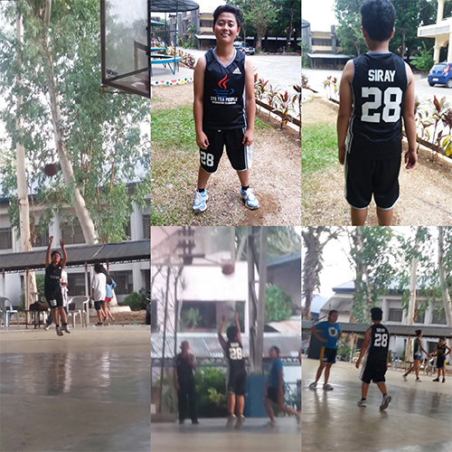
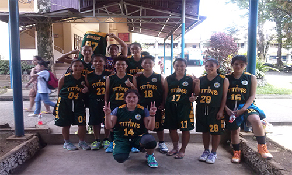

About Me
Hello .. I'm Mary Antoneth Seguiro Siray,I'm 21 years old,I was Born on July 21,1994 at Lumbayao Valencia City Bukidnon.I'm a friendly person.I love Listening Music, Watching Movies, and Playing ball games. Also I love to eat any kinds of fruits.
Educational Background
When I was in Elementary I studied at Lumbayao Elementary School, In my secondary level I graduated at Lumbayao Technical Institute.Also I graduated a Vocational courses at TESDA, I finished Consumer Electronic Services and now I currently studied at Bukidnon State University taking up Bachelor Of Science in Information Technology.
Family Background
I am a daugther of Matusalem Siray And Nelia Siray,I have a six siblings Nelma, Rose, Marry Jane, Japhet , John Jeferson.

Sports
"Sport do not build character, they reveal it." -John Wooden. I was interested with sports since I was elementary. I used to play basketball after class and in my leisure hours with my classmates and friends. When I attended high school, I was able to join leagues outside school and sometimes I joined games as one of the representatives of our Barangay. I found sport specifically basketball as my finest friend. Whenever I had a problem, I can always be with him as well as when I feel glad. In playing basketball in my own perception, it somehow build character unlike John Wooden sport said. Because in playing it, my character was developed specifically my patience but it is definitely true that sports reveal it. Before, if I was hit by my opponent, I had to avenge hitting him. But now that I been in so many games and competition, I learned how to be patient for us to win the fight. It doesn’t have to make vengeance to win the game but we have to play the fight clean to hit the victory.
 